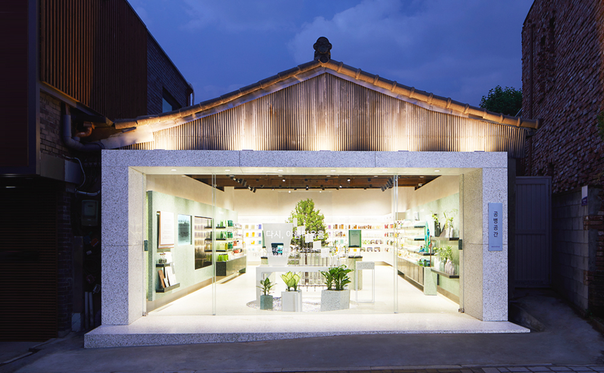

이니스프리 는 친환경 화장품 매장으로써 2003년부터 공병수거 캠페인을 진행하였고,2017년 공병을 재활용해 만든 매장 '공병공간을 오픈했다 '공병공간' 매장 곳곳에 식물들과 공병을 재료로 제작한 화병을 전시해 환경보호를 위한 노력이 아름다운 꽃병으로 다시 피어나는 것을 형상화 했다.
또 '공병공간' 매장 중앙에 공병 파쇄기를 비치해 소비자가 직접 공병을 파쇄하고 매장의 마감재로 활용하는 리사이클링 과정을 체험 할 수 있도록 했다.
이니스프리의 친환경을 위한 노력은 이뿐 만이 아니다. 2014년부터 이어온 친환경 캠페인 '플레인 그린'은 지구를 위한 일상 속 즐거운 실천을 의미한다. 매년 주제가 다른 캠페인으로 2019년 주제는 '아이 라이크 제로(I LIKE ZERO)' 슬로건 아래 '제로웨이스트(Zero Waste)를 함께 하자'는 메시지를 전했다.
이니스프리라는 용어가 상징하는 것은 inisfree = inis + free 라는 말로 '원료를 자연에서 얻어 건강한 아름다움을 친환경 용기에 담고자 한다.'라는 의미가 담겨져 있다.